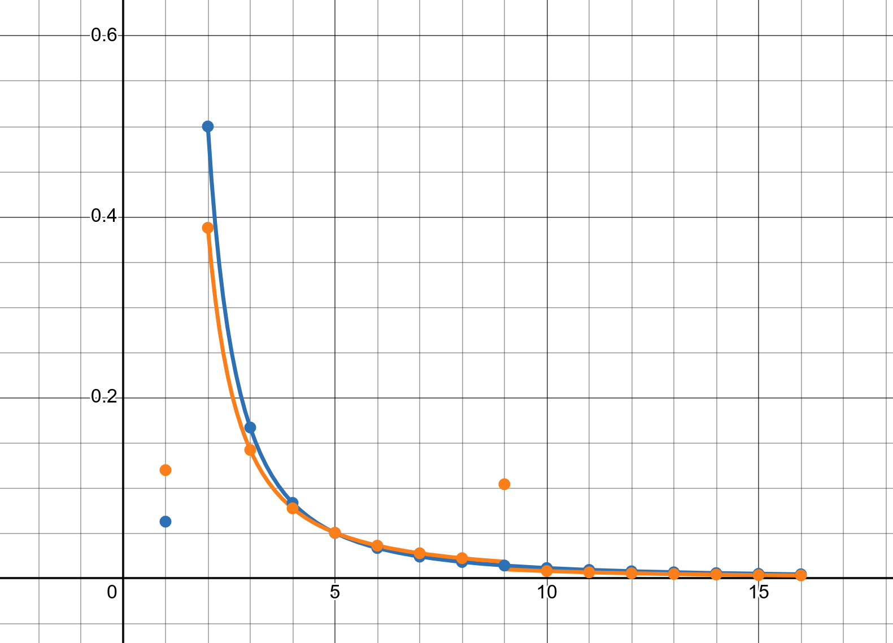

QRF Codes
A thing by Aidan Linerud
Context: FRC and scouting
FIRST Robotics Competition, or FRC, is an annual high-school level STEM sport. Each year, a new game with a unique theme challenges teams around the world to build hundred-pound robots. Competitions are comprised of qualifying matches and playoff matches. 6 teams split up into 2 alliances (red and blue) for every match.
Teams are chosen, semi-randomly, to fill in slots for every qualifying match. Notably, they don't get to choose their alliance or fellow teams. Once all the qualifying matches are over, the top 8 performing teams get to select other teams to form alliances for playoffs.
Scouting is the process of analyzing the performance of other teams. Teams scout in a variety of ways, for a variety of metrics. Official score reports usually have little data on individual robots. Regardless, the data gathered is used in alliance selection, as well as preparing strategies for upcoming qualifying matches.
A scouting system is all the hardware and software used or maintained by a team (or multiple teams) for scouting.
How do you transfer scouting data?
Each team has their own approach that fits with the rest of their scouting system: manual transfer from paper to spreadsheet; automatic transfer from Google Form to spreadsheet; mobile app to spreadsheet or database; mobile app to USB cable to laptop to spreadsheet; web app to local wired/bluetooth LAN server. So many ways!
I've thought a lot about how the flexibility and compatibility of a scouting system can be restricted by the methods chosen to record and transfer data. Maybe it requires a specific combination of hardware and software. Maybe it requires internet access. Maybe it requires some external solution or third-party service that has its own limitations.
Would it be possible to build a scouting system that can avoid these problems?
This is the biggest question I have attempted to answer with MeanScout, the scouting app used by Team Mean Machine (2471). Since its creation just over five years ago, I've experimented with quite a few different ways to set up, store, and transfer scouting data. I've slowly built it up to something that, for the most part, solves those problems for my team.
As a web app, it can run on any device that supports a modern browser: desktops, laptops, tablets, phones. As an offline-able, cacheable, installable progressive web app, it can be used without internet access, and can act like a native app (without the pitfalls of developing and deploying native apps).
Because MeanScout is a peer-to-peer (decentralized) scouting app, any device can act as your central repository of scouting data. Any device running MeanScout can import data, export data, analyze data, generate pick lists, and of course, record data. We choose which device to transfer all our scouting data to, even if that device is already used for scouting. We can also have as many devices acting as the "central repository" as we want, as long as we remember to update the data on those devices.
Finally, because MeanScout supports generating and reading QR codes, data can be easily transferred between any camera-equipped devices running the app. If a device can't utilize QR codes, the app still supports device-level sharing and file importing/exporting.
QR codes are super fast and super easy and super ubiquitous, but not that much data can be stored in one. We're talking a maximum of three kilobytes of raw binary data (or, less than three thousand ASCII characters) in one QR code. Oh, and scanning that big of a QR code can be difficult, especially for devices that use low-quality cameras, such as our cheap scouting tablets. Realistically, we have to limit the amount of data we can put in one QR code; otherwise, our scouting system would require devices with really good cameras. The smaller the QR code, the easier it will scan, but the less data it can hold. An optimization problem!
We can circumvent this problem by splitting up the data into multiple QR codes. I've seen a few scouting apps that use a button to advance between them, and others that automatically display each one in consecutive order. That will work just fine for smaller data transfers, but if you skip a scan, you have to wait for it to loop back to the missed QR code (or manually do it yourself). If the data is large enough, it can quickly snowball into a hassle.
There is a fascinating technique that deals with these annoyances. Enter: fountain codes.
By using randomness, a fundamental bitwise operation, and a bit of linear algebra, fountain code algorithms allow us to transfer any amount of data over endlessly generating QR codes, while providing an effective workaround for missed data.
Info and Order: Special Meanings Unit
How do you communicate with someone? Out of our massive palette of methods of communication, it usually isn't with a singular instantaneous sound; you'd have to cram quite a bit of information into something so basic. However, there are examples of instant sounds we use. How about nonverbally screaming due to something unpleasant? Think of the worst food you've ever had an immediate, visceral, audible reaction to. That yelp of distaste is a singular data point that you can extend or repeat for as long as you want; eventually, someone else will realize that you're distressed. It wouldn't be very beneficial if your scream didn't last long enough for people to hear, so you usually scream enough so that people can (perhaps a second or two).
But ultimately, other people don't need to listen to the entire length of your scream to receive the underlying message. In fact, it probably doesn't matter which part of your scream they actually comprehended. There's some point at which they've got it, and would like you to stop screaming about bad-tasting food now, thank you.
Let's look at how we communicate through text and speech. We have to run through the entire message to both send and receive. With text, that is very asynchronous: it doesn't need to be read immediately after it's written. With speech, it can be asynchronous through an audio recording, but usually we listen to and comprehend speech almost as soon as it is spoken. For either case, the meaning and context aren't fully determined until after it ends: "Yes, this food is positively the worst tasting edible material I've ever had the pleasure of consuming, and my day is ruined."
Complex information is transmitted through complex communication: unique, required, ordered segments assembled into meaning. One benefit is that it's really good at transmitting a lot of complex communication… assuming the receiver can handle it at the same rate that it comes in. Otherwise, it's common that the sender has to repeat certain chunks of the overall message by figuring out what parts the receiver(s) missed.
I can relate limited communication (uh, screaming) to a water fountain: unordered, optional segments assembled at any point, in any way, into meaning. The benefit here, as I've pointed out, is that it doesn't matter what order you receive the parts of the message; you just need enough water to fill up an imaginary bucket, where a full bucket implies full comprehension. However, it does become much harder to relay complex information.
But not impossible. Let's send complex information through a limited form of communication!
The Coveted Fountain of Codes
Take a complex message, and spit it up into equally sized chunks. Each chunk should be small enough to transmit in one go. Usually, the sender would put out each chunk in order: the first chunk, then the second chunk, and so on until the final chunk. If the receiver missed some chunks, the sender would have to start a second round of communication with the receiver to identify and re-send the missing chunks. Or, they could re-transmit the entire message if that can't be done.
From here on out, assume that the receiver can't explain which chunks they missed, so the sender has to resend the entire message. After all, you can't go up and tell a water fountain which drops of water you missed. All you can do is fill up more water in your bucket.
What we've gotten here is a continuous stream of information from the sender. After sending the last chunk, the sender starts right back up on the first chunk. Over and over again. That way, if the receiver misses a chunk, they can wait for the sender to go back around and resend the missed chunk.
If the receiver has a hard time getting those chunks, it could take a long time for them to get the whole message. Especially for very long messages, where missing just one chunk means the receiver has to wait for the sender to get all the way back to where it missed the chunk. And that's only giving the receiver the chance to actually get that message; it could miss it again! It can't do much about it, as we've agreed that the receiver can't communicate back to the sender.
In probability theory, this is called the coupon collector's problem: there's a selection of unique coupons; one item of a product line might have one of those coupons; collect all coupons to win.
Hm, we could improve this particular receiver as much as possible to reduce its error rate, or we could just replace it with one that's much better. But nothing is perfect. Besides, as we inch closer to perfection, things usually tend to jump up in price. Instead, let's try changing the way those chunks are sent out, starting with the simplest modification: uniform, random selection.
Each chunk gets an equal chance to be sent out next. Yes, even if the chunk was just selected last time. This is the most extreme example of randomized selection. It also happens to be plagued with the coupon collector's problem: when you get down to just a few chunks left that need to be transmitted over, you're still using the same equal chance for each chunk. It becomes more and more likely to generate the chunks you don't need anymore! Combine this with the receiver's error rate, which could also be considered a form of the coupon collector's problem, and you can get a very poor overall transmission rate.
We need a way to use randomness to acquire missed chunks without looping around the whole message, but also a way to reduce its impact on the transmission rate near the end. Is there a way we can somehow combine multiple parts of a message to be sent together in one chunk? Can we do so in a way that doesn't change the data size, while still being possible to revert it back into the individual parts? Enter the next piece of the puzzle: the XOR operator.
Carry-Free Addition
OR, AND, and XOR. Three simple logic gates that act as fundamental building blocks of computers.
Each of these gates has two inputs and one output. Each input can be on or off (1 or 0), and the same goes with the output. These gates compare their inputs to determine the output:
- OR: if at least one input is 1, the output is 1. (This or that or both)
- AND: if both inputs are 1, the output is 1. (This and that)
- XOR: if the inputs are different, the output is 1. (This or that, but not both)
XOR is called "exclusive or" for a reason. Unlike OR, it won't output 1 if both inputs are 1.
Adding two binary numbers is done per column, using combinations of these three operations. XOR is used to determine the direct output of that column, while AND is used to determine whether a 1 should be carried out to the next column. There are actually two additions going on per column – one XOR for the two inputs, and another XOR for combining the result of that XOR and the previous column's carry – so an OR is used to combine the output of the two AND gates to output the carry for the next column to use.
What if we tried combining parts of the message together using one of these logic gates? There is an important thing to keep in mind: however we combine those parts together, we need to be able to reverse the combination. Of course, without any information about the original parts, there would be no way to undo any of those operations. But that's okay! Because we're already sending out chunks of the message in random order, there's a half-decent chance that we've previously received one of the original chunks of the combined chunk. I'll get into more details about that process later.
Let's say we can convert our message to a bunch of binary. Which one of those logic gates (or bitwise operations, now that we're talking binary) would be the best fit for our needs? Again, we need to be able to perfectly reverse the operation on the receiving end, assuming it has one of the inputs already.
Does OR work? Going backwards, we either get a value of 0 or 1 on the receiving end. If the value is 0, then we can know for a fact that both inputs are 0, otherwise we'd get a 1. If the value is 1, and our known input is 0, then we know the last remaining input has to be 1. Pretty good so far, but problems arise when the known input is 1 while the received value is also 1. We won't be able to know what the unknown input is, because in this case, the received value wouldn't be affected by it!
Does AND work? Going backwards again, we either receive 0 or 1. If the value is 1, then we can know for a fact that both inputs have to be 1. If the value is 0, and our known input is 1, then we know the remaining input has to be 0 (otherwise, the output value would be 1). But if the value is 0, and the known input is 0, we can't figure out the last remaining input! A similar issue to OR.
How about XOR? Going backwards, we either get 0 or 1 on the receiving end. If the value is 1, and our known input is 1, then we can conclude that the remaining input has to be 0. If the value is still 1, but our known input is 0, then we can say the other input is 1.
If the value is 0, and our known input is 1, then we know the other input is 0. And finally, if the value is 0, and our known input is 0, then we know the remaining input has to be a 1. Look at that, we've exhausted every possible combination, and there's no ambiguity!
We now have a method to combine two chunks of a message together into one chunk, which also works backwards as long as we get one of the original chunks.
I mentioned binary addition earlier, couldn't that be used? Well, it can't reverse itself as easily as XOR. XOR can be done to each individual "column" of numbers in isolation (no carry info to affect other columns), and it doesn't need a modified algorithm to reverse the process; just use it again on the output value with an input to produce the other input.
Linequatiophobia
Remember how I said OR, AND, and XOR have two inputs? That's not the whole story. They can have any number of inputs. This means we can combine as many chunks as we want with XOR, and we can reverse this combination through repeatedly applying known inputs to the output via XOR.
Let's go through this process. Say a message is split into 8 chunks:
A B C D E F G HAnd let's say we received a randomly combined chunk, as well as a randomly selected single chunk:
A ABFor future reference, every time we send a combined chunk, we'll include the name of each chunk combined. We can set up these equations, thanks to XOR's reversibility:
A ^ B = AB
AB ^ B = A
AB ^ A = BThis is just a system of linear equations! We already know what A is, as we've been given that single chunk. All we have to do is apply XOR to A and AB to get B:
A BThe AB chunk is redundant now that we have A and B.
Now let's say we receive a combined chunk of 3 source chunks:
A B ABCHere's some more linear equations:
A ^ B ^ C = ABC
A ^ ABC = BC
B ^ BC = CFirst we XOR A and ABC:
A B BCAnd then XOR B and BC:
A B CJust like that, we have another piece of the message.
Any time we get a combined chunk during the receiving process, we apply any matching single chunks we've collected so far. And any time we get a single chunk, we apply it to any matching combined chunks collected so far. This action can then be propagated to other chunks if they can be XOR'd to get new information.
This process ends once the number of singular chunks received is the same as the number the original message was split into. To ensure that the receiver knows the original count, we'll just include it at the beginning of each chunk, alongside the list of source chunk names. This forms the header data of the chunk, which is separate from the chunk's actual content. We don't apply XOR to the header data.
That's the whole process for the receiving side. Now, let's round out with the last part of fountain codes: a better method of randomly selecting and combining message chunks on the sending side.
High Roller Math
Before, we tried to give each chunk an equal and random chance of being selected. While we're still going to do that, we now have another random selection to deal with: the number of chunks to be combined with XOR. The range is between 1 and n chunks (inclusive), where n is the total number of chunks that compose the message. Should we also give an equal chance for each value in that range? Or should we lean toward using certain values in that range?
Michael Luby, the inventor of fountain codes, proposed a pair of probability distribution functions. These basically apply a value from a random number generator to a set of defined breakpoints within the possible range. For example, if you want to recreate a coin flip using a random number with a range from 0 to 1, you would check if the number is less or greater than 0.5. That's a breakpoint. If you want to rig it to favor one side of the "coin", you simply move around the breakpoint.
Luby's first probability function is called the "ideal soliton distribution". It's called "ideal" because it doesn't really account for transmission errors; it's not effective in practice. What does "soliton" mean? Good question. I haven't found a good definition that applies to statistics. Anyhow, the function is defined as:
p(1) = 1 / k
p(i) = 1 / (i * (i - 1)) // where i = 2,3,…,k
i is the number of chunks to combine. The function outputs the chance that the number is selected. To
create breakpoints that we can iteratively check against our random value, we take each value and add it to the
sum of the previous values.
Let's say our k value is 8 (total chunks). The chance of selecting just one chunk is 1/8, or 12.5%.
The chance of selecting two chunks is 1/2, or 50%. The chance of three chunks is 1/6, or 16.67%. This continues
until selecting 8 chunks, which is 1/56, or 1.79%.
| Chunks | Chance | Breakpoint |
|---|---|---|
| 1 | 12.50% | 12.50% |
| 2 | 50.00% | 62.50% |
| 3 | 16.67% | 89.17% |
| … | … | … |
| 7 | 2.38% | 98.21% |
| 8 | 1.79% | 100.00% |
I prefer to calculate each breakpoint and put them in an array, with indexes that match the corresponding chunk count. I iterate from index 1 (not 0), and pick the first index that points to a breakpoint greater than my random value. That index is now the number of chunks to be combined.
I don't use the ideal distribution though. Luby's second probability function is called the "robust soliton distribution". It takes several steps to construct, so I made a Desmos graph that breaks it down and has a visual comparison between the two soliton distributions.
https://www.desmos.com/calculator/fcj4clugnl 
Compared to the ideal distribution, it increases the chances of selecting a single chunk and selecting a
specifically large amount of chunks. It is fine-tuned with two parameters, one of which you base on the expected
transfer success rate. If you want to get a sense for it, try nudging the c and E
variables in that Desmos graph.
A Bucket Full of Water
Believe it or not, we have reached the end of our fountain code breakdown! With the probability distribution function and XOR, we can create efficiently encoded blocks to generate/display QR codes. With simple linear equations and XOR (again), we can decode those blocks as we receive/scan QR codes. Because we're treating complex data as a stream of quasi-homogeneous information, we can easily deal with unordered and missed chunks.
Generating QR codes from encoded chunks is relatively straightforward. QR codes support a few data types: numbers, alphanumerics, bytes, and kanji. We just give the bytes of the encoded chunk to a QR code generator library/API (and don't forget the header data!). Of course, we'll want to repeatedly encode chunks, and keep generating QR codes over time. In MeanScout, I use a library that outputs to a canvas element, so I just keep generating newly encoded chunks and overwriting the canvas with the new QR code.
Scanning those QR codes is a similar process, besides capturing a device camera stream. Give each frame to your code reader library/API, and if it scans a new QR code, start attempting to decode it. I skip frames that have the same QR code by simply comparing the chunk header to the previous one. Once you've decoded each of the chunks, stop the code reader and stream capture, and send out your data to the rest of the app.
While you could scan these QR codes with any QR code scanner, it would expect one singular, static QR code. And the data goes through multiple rounds of XOR while encoding, not to mention a compression step beforehand (at least for MeanScout's QRF codes), so you'd get useless bytes.
It's probably a good idea to call these fountain code-powered QR codes something to differentiate them from regular old QR codes. So, I am hereby defining a quick response fountain code, or QRF code, as an endlessly generating set of QR codes powered by fountain code algorithms.
Now that you know fountain codes, QRF codes, and a neat use case of QRF codes, you can tell your friends, teammates, mentors, parents, and random people on the street! If you like to move a lot of data around via QR codes, see if fountain codes could help with transfer rates. If your data is compressed enough or small enough in the first place, it probably won't provide much of a benefit.
If you want to check out MeanScout, you can find the link below. It can be used by any team (assuming it fits their needs), but if you are even remotely interested in developing your own scouting system/app, make it happen! Creating a scouting system involves quite a few technical areas adjacent to robotics, and reinventing the wheel is an incredible learning experience. It gives you the chance to learn from and build off of the fantastic work of other teams. It also gives you the chance to venture outside of the FRC world and discover creative, novel, niche, and weird solutions that no team has used, or even heard of.
Sources and Links
My Desmos graph
https://www.desmos.com/calculator/fcj4clugnl
MeanScout
https://github.com/TeamMeanMachine/MeanScout
I first learned about fountain codes from this article
https://divan.dev/posts/fountaincodes/
Here is the previous article to that one
https://divan.dev/posts/animatedqr/
Technical articles
https://docs.switzernet.com/people/emin-gabrielyan/060112-capillary-references/ref/MacKay05.pdf
http://www.netlab.tkk.fi/tutkimus/abi/publ/lt-resim-2006.pdf
More XOR info, use cases
https://www.chiark.greenend.org.uk/~sgtatham/quasiblog/xor/
Wikipedia
https://en.wikipedia.org/wiki/Fountain_code
https://en.wikipedia.org/wiki/Luby_transform_code
https://en.wikipedia.org/wiki/Michael_Luby
https://en.wikipedia.org/wiki/System_of_linear_equations
https://en.wikipedia.org/wiki/Coupon_collector%27s_problem